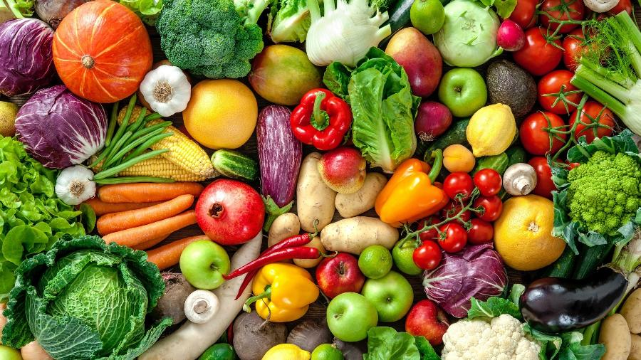
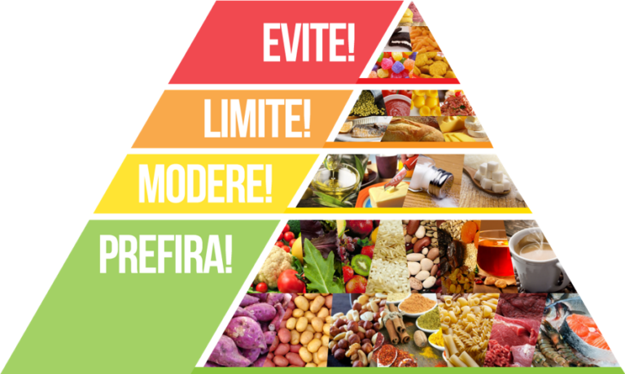

-Alimentos livres de substâncias cancerígenas.
-Proporciona uma alimentação mais saudável.
-Temperos sempre à mão.
-Funciona como terapia para a mente.
-Ajuda a economizar.
Os alimentos orgânicos precisam ser produzidos em solos ricos e com adubos naturais. Isso faz com que eles apresentem um índice nutritivo maior do que aqueles que contêm componentes químicos.
Além disso, os orgânicos tendem a ser consumidos mais frescos, o que os leva a conservar mais os componentes nutritivos. Então, esses nutrientes são absorvidos de forma mais eficaz pelo organismo.
Além de não conter agrotóxicos que possam alterar o seu sabor, os orgânicos passam por um padrão rigoroso de produção. O resultado é o preparo de alimentos mais saborosos, além de ricos em termos de textura e aroma. Por esse motivo, é natural que os clientes que provam orgânicos não queiram abandonar essa opção de consumo.
Um dos principais problemas relacionados ao hortifruti de supermercados e sacolões está relacionado ao excesso de agrotóxicos nos produtos. É que, para produzir em grande escala e não ter prejuízos com pragas, os agricultores precisam utilizar algumas substâncias químicas que, ao longo do tempo, podem ser prejudiciais para o organismo. Ao plantar em casa, você pode usar fertilizantes e pesticidas naturais — em alguns casos, esses elementos nem mesmo são necessários.
Além disso, as frutas e verduras estarão ainda mais acessíveis para você: com apenas alguns passos, é só colher o que produziu e cozinhar na mesma hora, proporcionando uma alimentação muito mais saudável e repleta de bons nutrientes não apenas para você mas também para quem você mais ama.
Você deseja que seus filhos cresçam sabendo sobre a importância de uma boa alimentação? Para criar hábitos saudáveis para a família, nada melhor que ensiná-los com exemplos práticos. Fazendo a sua horta em casa, você pode mostrar aos pequenos sobre como funciona todo o processo de crescimento e desenvolvimento de uma planta, além de educar sobre os benefícios das vitaminas e nutrientes das frutas e legumes para o nosso corpo.
